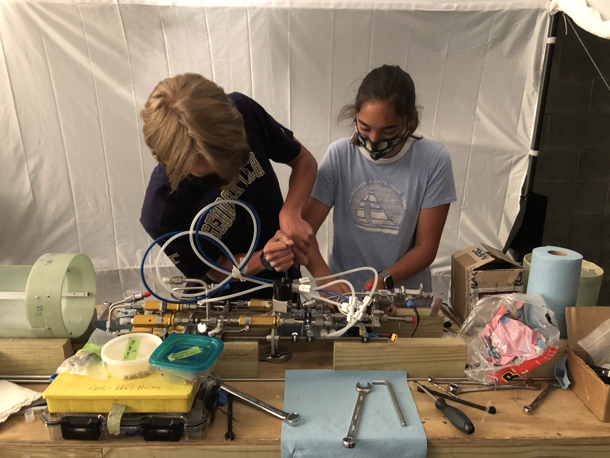
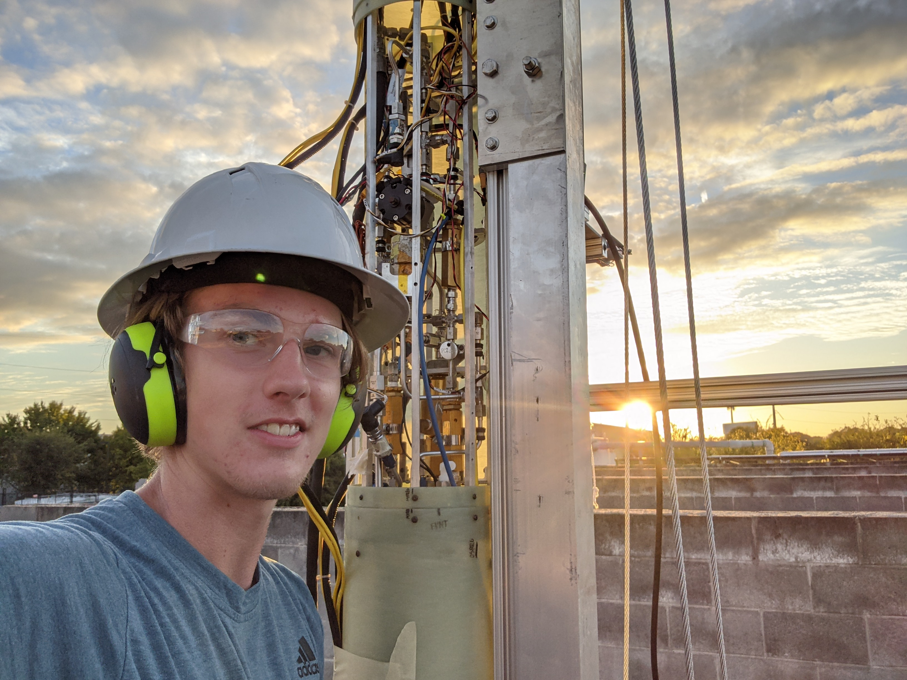
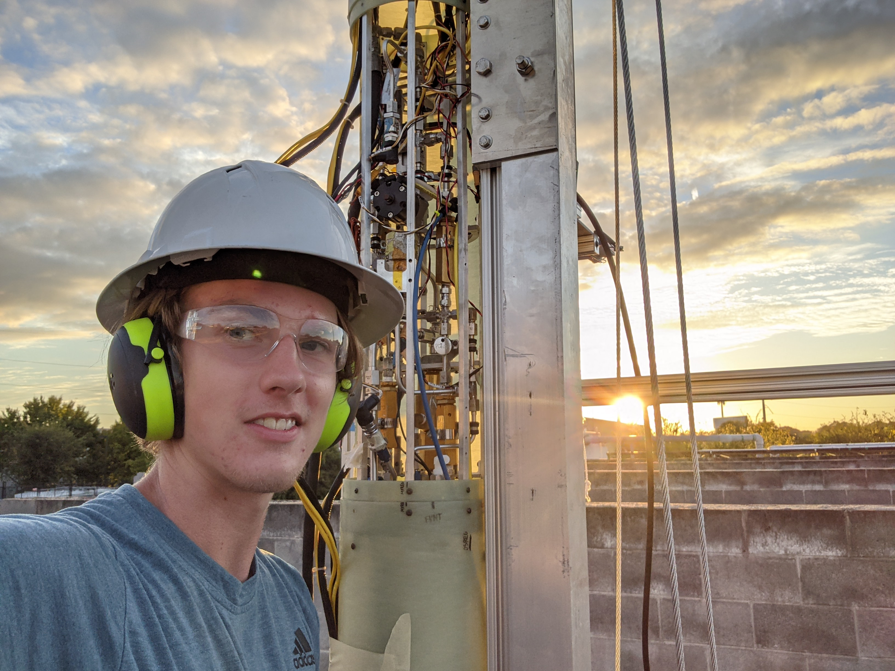
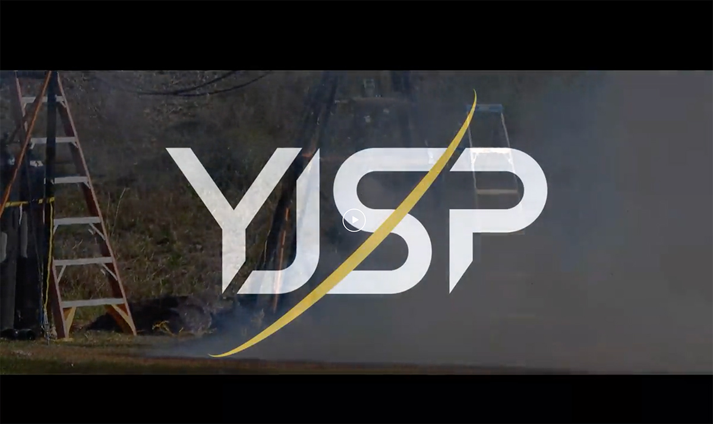

Contributions to Rocket Production
Design
Designing the flight feed system has been a phenomenal learning experience. Contemplating all the contingencies to make the system as safe as possible while also fitting within the design constraints has been a challenging but enjoyable problem to solve.
- Created Plumbing and Instrumentation Diagrams (P&IDs), including the Vehicle P&ID and Reality P&ID to spatially reflect the actual feed system
- Calculated required COPV Volume and conducted trade study
- Devised compact integration of FFS and vehicle structures using Solidworks to model mounts and plumbing for every component
- Analyzed loads on tank, COPV, and component mounts using Solidworks FEA and hand calculations
- Designed custom fitting for COPV at 4500 PSI
- Made several feed system adjustments to solve various problems (Added Fuel Check Valve to prevent backflow, made all vents normally open to automatically safe the system)
Build
Assembling Subscale and the flight feed system has proven more difficult than initial thought. In fact, the majority of the problem solving has not been in the face of fluid issues, instead the form factor of an 8 inch diameter tube has been the hardest design constraint. Designing for assembly and perfecting the assembly process has been key for accelerating our launch timeline.
- Plumbed, flared, and bent tubes to build FFS
- Fabricated feed system mounts using the waterjet and mill
- Designed and fabricated custom wrenches to fit in tight places
- Cleaned system to be compatiblee with Liquid Oxygen
- Devised extensive assembly procedures ensure proper order of operations for ease of assembly
- Built with minimal resources and shoestring budget (our facility is just a 20ft shipping container)
- Led vehicle integration and assembly of multiple subsystems into a completed vehicle

Test
Testing requires substantial planning of procedures and contingencies in the case of an undesired event. When working with dangerous fluids preparation and safety measures are key.
- Hydrostatic Proof Tested COPV to 5000 PSI, Fuel Tank to 700 PSI, and Liquid Oxygen Tank to 600 PSI
- Prepared thorough Test Readiness Reviews and Test Procedures for Water Flows and Cryo Flows
- Water flowed FFS to characterize feed system
- High Pressure COPV Fill to characterize fill, leak, and vent rates
- Cryo flowed FFS using LN2 to characterize feed system under cryogenic temperatures
- Test Operator for Vehicle Static Fire
 



Read more about my involvement in YJSP: Engineering
YJSP Video Production
I've filmed and edited several videos for the club to share our progress toward launch. I plan on making short documentaries of our engine hotfire campaign and our launch. Here's a video of our first Static Fire with our flight vehicle.The following video post received 36,500 upvotes on Reddit.

This video recaps everything we did over the Spring 2021 semester as we worked toward Static Fire.